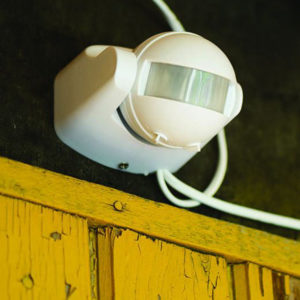

Что входит в систему «Умного дома».
«Умный дом» состоит из многих групп элементов, каждая из которых выполняет свою функцию:
Контроллер (другое название – хаб, шлюз). Устройство. Выполняющее функцию «мозгового центра».
В нём содержатся электронные компоненты, позволяющее запрограммировать контроллер на приём сигналов, их обработку и управление различными элементами «умного дома» по проводам или «по воздуху».
В отличие от многих других приборов в системе «умного дома», шлюз всегда подключается к сети через 220 В. Многие производители даже размещают в корпусе вилку питания, на которой и держится устройство в розетке.
Датчики (иногда называются сенсорами). Назначение этих элементов – сбор информации о состоянии помещения, где они установлены.
Благодаря датчикам собираются сведения о температуре и влажности воздуха, присутствии людей в комнатах, открывании и закрывании дверей или окон, протечках воды, состоянии освещённости и многом другом.
Многие датчики в силу своего малого энергопотребления легко сделать независимыми от внешнего источника тока – в этом случае они оснащаются аккумулятором или литиевой одноразовой батарейкой, которой хватает на год или два.
Актуаторы (или просто исполнители) – специальные агрегаты, которые настроены на получение сигнала от контроллера.
После приёма они выполняют различные действия – включают свет, управляют питанием бытовой техники, поднимают и опускают шторы, перекрывают воду и делают многое другое.
Полностью автоматическое выполнение сценария «умного дома» обычно выглядит так:
Датчик посылает сигнал на контроллер – контроллер интерпретирует полученные данные с актуальной программой и даёт команду исполнителям – актуаторы выполняют приказ с контроллера, осуществляя какое-либо действие.
Устройства управления С их помощью хозяин узнаёт о состоянии системы, а также может отдать команду на срабатывание устройств. В современных системах Smart home всё чаще роль органа управления полностью отдаётся смартфону с установленным соответствующим ПО.
Это намного удобнее, чем стационарный кнопочный пульт или блок дистанционного управления. Смартфоны сегодня есть у каждого, с их помощью можно получать информацию от датчиков и управлять актуаторами из любого места.
Разновидности устройств «умного дома»
На сегодняшний день в системах «умного дома» есть свои наборы устройств, которые придают задумке нужную степень функциональности.
Регистрирующая аппаратура
Это те самые датчики, благодаря которым система собирает сведения о том, что происходит в квартире. Чем больше различных датчиков, тем полнее картина и больше возможностей повлиять на различные параметры и устройства в комнатах.

Датчик движения. Это инфракрасный сенсор, однако встречаются и другие виды. Датчик движения определяет, кто находится в комнате.
Информация полезна и для владельца, который дистанционно может отследить, не появлялся ли кто-то, и для автосрабатывания сценариев, в освещении и создании микроклимата в помещении.
Датчик температуры. Данное устройство даёт системе умного дома информацию о критических точках, которые задаёт пользователь.
При понижении температуры автоматически включится система тёплого пола, при повышении температуры включится кондиционирование.
Датчик влажности воздуха. Для тех людей, которые с трудностью переносят сухой воздух, это устройство – настоящая находка.
Фирма Xiaomi выпускает увлажнители, которые могут работать по команде через Wi-Fi. А послать этот сигнал может контроллер, узнавший это от датчика влажности.
Датчик уровня освещённости. Данное устройство одно из простейших, но при этом очень полезных в системе умного дома.
Встроенный фотоэлемент регистрирует количество света, попадающего в комнату, и реализует сценарии искусственной подсветки: заполняющей, точечной, общей.
Датчик открывания дверей. Устройство состоит из двух половинок: она вешается на полотно (саму дверь), другая на дверной косяк (или оконный проём).
Данная схема находит своё место в «умном доме» из соображений безопасности. С её помощью можно настроить сирену и оповещение на смартфон при выходе из дома.
Датчик протечки воды. Досадное происшествие – пробой шланга стиральной машины или сифона в смесителе – может превратиться в затратное дело.
Датчик протечки не только включает сирену и отсылает оповещение на смартфон, но и может перекрыть воду.
Видеокамера. Оно из самых информативных устройств. В доме, где есть маленькие дети или домашние питомцы.
Отснятый материал пишется на карту памяти или в облачное хранилище через буфер.
Датчик дыма и утечки газа. Пожарные датчики и так имеются в квартире, однако он не имеют, в отличие от других умных устройств, оповещать владельца push-сообщением или иным тревожным сигналом на смартфон.
Что касается датчика утечки газа, то его ставят обычно в частные дома, оснащённые отопительным газовым котлом.
Актуаторы
Устройства-исполнители – это элементы, которые делают работу за человека, преимущественно дистанционно. При наличии «умного дома» можно, не вставая с дивана, включать и выключать свет, отопление, сплит-систему, подогревать бойлер к приходу домой.
Реле.Распространённая группа устройств, которые служат для замыкания цепи и подачи электропитания на определённые приборы, бытовую технику и прочие механизмы.
Реле обычно подсоединены к сети 220 В. При поступлении сигнала со шлюза ток идёт по катушке электромагнита, контакты соединяются, и электрический ток поступает к нужному устройству.
Розетки. Отличаются от обычных рядовых розеток тем, что подают питание по сигналу с специального контроллера умного дома.
Эти устройства невероятно удобно использовать для техники, оснащённой стандартными вилками для питания.
Выключатели. С помощью этих устройств задействуют сценарии освещения и другие действия для системы умного дома.
Выключатели поддерживают связь по протоколам Wi-Fi, Zigbee и прочим другим каналам.
Электромеханические движители. К этому классу относятся устройства, отвечающие за различные действия, связанные с перемещением в пространстве.
К таким, например, причисляют привод рулонных штор или жалюзи, запорную арматуру водопроводной воды и многие другие устройства.
Лампочки и светильники. Осветительные приборы, оснащённые каналами передачи информации, умеют включаться в соответствии с назначенным расписанием.
Это расписание запрограммировано в контроллер или в зависимости от показаний датчиков освещения или движения.